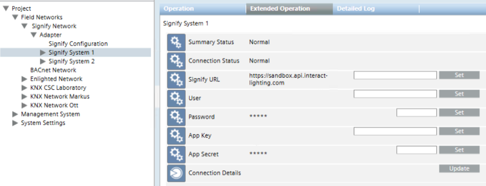

Modifying the Signify Connection Parameters
If necessary, you can modify the connection parameters that you initially defined in the Configuration node.
You do that in the Signify System<n> node, which corresponds to the affected Signify system <n>, with <n> being the sequential system number, starting from 1.
- Select Project > Field Networks > [SORIS network] > [Signify adapter] > [System<n>]
- In the Operation tab, modify the following connection parameters as necessary.
- Signify URL
- User
- Password
- App Key
- App Secret
For each field, enter the value and click SET. - In Connection Details, click Update.
- The new configuration data is acquired and System Browser refreshes the Signify system objects.
